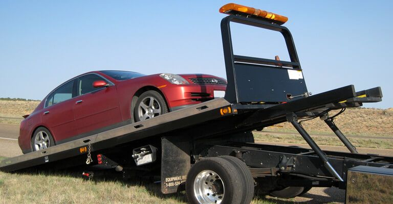
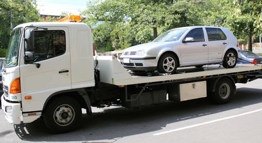

Would you like to have your auto eliminate and obtain good cash for it? After that, you are precisely in the appropriate area! Old vehicles can rapidly become a costly trap because cars getting old in years utilize even more gas. Repair work will also become much more countless as well as frequent in time. With us, you can dispose of your auto rapidly; we grab your automobile and then take control of all additional steps to recycle your car. Our complete solution is cost-free for you!
You will get top dollar for all your old and also undesirable vehicles, rise to $9999 regardless of the problem they remain in. So if you have an old four-wheel drive, front-wheel drive, rear-wheel drive, balanced all-wheel drive, plug-in crossbreed, hybrid automobile, classic car, classic car, hybrid electrical automobile, and an electrical auto, call our scrap car getting solution today to obtain a free pickup truck solution from us or drop it off to our ravaging backyard for even more money!
Are you seeking a vehicle removal near you? Look no further. We have currently grabbed hundreds of scrap, scrap, used, old, trash lorries between Joondalup, Malaga, Midland, Redcliffe, Morley, Ellenbrook, Forrestfield, Fremantle, Mandurah, Maddington, Wangara, as well as Rockingham swiftly, conveniently, and conveniently for our customers and also dealt with jobs such as auto recycling as well as evidence of destruction. You do not require to fret about anything anymore - let us eliminate your auto currently !!
Free elimination of all kinds of autos! Whether you have a Kei auto, Sports car, Family members auto, Euro Cars and truck, Asian Cars, Euro Asian Cars, and American Autos, we will remove them.
The brand does not issue. Our automobile purchasing service will purchase and eliminate all car models and brands, a renowned brand name like Hyundai, BMW, Mercedes, Holden, or Toyota.
Whether you have an old lorry that is no more worth repairing, your car title did not pass from the Department of Transport, or you had a mishap: Your garbage car can still deserve something! With our scrap car purchasing service, you can stand up to $9999 in money, and also, if you bring your car to our scrap yard, we will pay you more! We also pick up your vehicle free approximately 50 kilometers from Perth. You can either have your old car got by a qualified automobile reusing business like our firm or bring it to our scrapyard yourself.
You will get a certain amount as a seller, depending on the lorry version, condition, and estimated reusing options. A certification disposal type will be issued to you right away. You will need this along with the vehicle registration file and permit plates to properly deregister the car at the registration office.

Please compose us an email or give us a call so we can visit. Marketing your old car is simply a few steps:
Use our inquiry kind or call us straight. For us, adhering to inquiries are necessary for vehicle disposal:
With this info, we can set up a visit and assess whether we can purchase your junk automobile and pay you a reasonable amount of cash in return.
If your old automobile can no longer be marketed as a made use of auto, the means to specialist lorry damaging is worthwhile in 2 aspects. They are your pocketbook and also the environment!
Car disposal is basically concerning disposing of car in an eco-friendly method and recovering basic materials constructed right into them.
This includes, for instance:
There are three good reasons that it is worthwhile for you to have your old vehicle recycled and scrapped.

Prevent criminal offense, have cars recycled.
For one point, if you park a ravaged auto on the side of the roadway, you are devoting a criminal offense. This is prohibited disposal, which can be penalized with a substantial fine of approximately $50,000. In the worst instance, there is also a prison sentence.
As a result, the last lorry owner always has to send a disposal certification to the registration workplace. You can acquire this from a licensed recycling company or a salvage backyard.
If there is no proof of proper disposal at the car scrap yard, you are suspected of having illegally taken care of the old cars and truck (on the roadside, in public locations) or kept it (e.g., secretive garages).
Vehicles have not just a lot of recyclable materials yet additionally ecologically unsafe substances. Most importantly:
These substances create considerable damage when they enter the setting. Consequently, end-of-life cars are classified as hazardous waste. To avoid environmental damages, unlawful automobile disposal is a crime.
Conserving sources with car recycling is just as essential. Prized possession resources such as steel, glass, and plastic can be recycled in high quality and went back to the raw material cycle.
Nearly every old vehicle still has a residual value: these are the parts that are suitable for reuse and also hence have a market value. This recurring worth will certainly be paid for by the lorry recycling division.